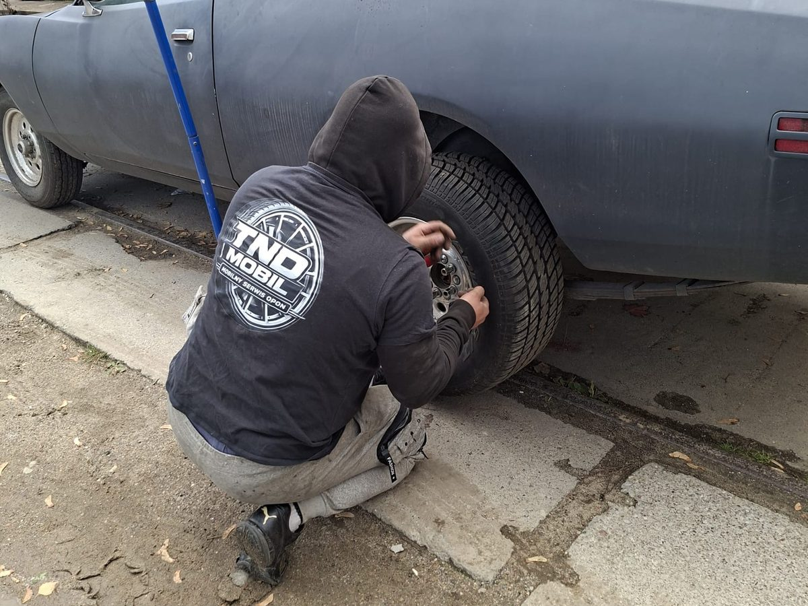

W skrócie: zmień opony, gdy średnia temperatura dobowa przez kilka dni spada poniżej 7°C. Zwykle w Polsce to przełom października i listopada.
Zasada 7 stopni
Poniżej ok. 7°C mieszanka gumy w oponie letniej twardnieje i traci przyczepność. Opona zimowa ma bardziej miękką mieszankę i gęstsze nacięcia (lamele), które lepiej trzymają się mokrej i zimnej nawierzchni.
Sprawdź bieżnik
Prawne minimum to 1,6 mm, ale opona zimowa traci swoje właściwości poniżej ok. 4 mm. Zmierzysz to miernikiem albo wskaźnikiem TWI w rowkach.
Co mówią przepisy
Sprawdź aktualny stan prawny przed publikacją — przepisy dotyczące opon zimowych mogą się zmieniać.
Lista kontrolna przed wymianą
- Rozmiar opon (np. 205/55 R16)
- Głębokość bieżnika
- Data produkcji (kod DOT)
- Stan felg i zaworów
